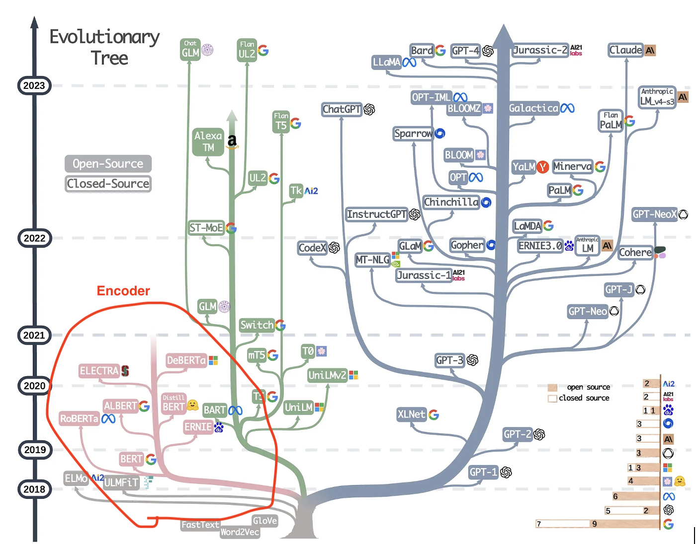

UNIVERSITE PARIS VIII - VINCENNES-SAINT-DENIS
DIRECTION DES SYSTEMES D'INFORMATION ET DU NUMERIQUE (DSIN)
Atelier IA
2. Introduction to LLMs in Python
sanghun BANG
Le 21 janvier 2025
Sommaire
- LLM
- Utilisation des LLM pré-entraînés
- Comprendre le transformer
- Préparer le fine-tuning
- Fine-tuning par entraînement
- Prochain atelier
LLM
- Basé sur des architectures d'apprentissage profond,
- Le plus souvent des transformers,
- D'énormes réseaux neuronaux avec de nombreux paramètres et des données textuelles abondantes.
- Exercice (llm001.ipynb)
LLM
Réseaux de neurones et apprentissage profond
Biological neuron (source: www.wikipedia.org )
Model of the neuron
LLM
Réseaux de neurones et apprentissage profond
Le perceptron multicoucheMultilayer perceptron
Multilayer perceptron

XOR simulation
LLM
Arbre évolutif des LLM modernes. Image de Yang et al.
Utilisation des LLM pré-entrainés
Génération de texte
Exercice (llm_generation.ipynb)
Utilisation des LLM pré-entrainés
Traduction
Exercice (llm_traduction.ipynb)
Comprendre le transformer
L'architecture "Transformer" initialement publiée par Vaswani et al.
Comprendre le transformer
- Architectures d'apprentissage profond
- Traitement, compréhension et génération de texte
- Utilisées dans la plupart des LLMs
- Gèrent des séquences de texte longues en parallèle
Comprendre le transformer
Comprendre le transformer

Comprendre le transformer
Comprendre le transformer
Comprendre le transformer
Encoder-only
- Compréhension du texte d'entrée
- Pas de sortie séquentielle
- Tâches courantes (classification de texte, analyse de sentiment, questions-réponses extractives)
- Modèles BERT (Bidirectional Encoder Representations from Transformers)
- Exemple : distilbert-base-uncased-distilledsquad"
- Exercice (encoder.ipynb)
Comprendre le transformer
Decoder-only
- L'accent est mis sur la sortie
- Tâches courantes (génération de texte, questions-réponses génératives)
- Modèles GPT (Generative Pre-trained Transformer)
- Exemple : gpt-3.5-turbo
- Exercice (decoder.ipynb)
Comprendre le transformer
Encoder-decoder
- Understand and process the input and output
- Common tasks (Translation, summarization)
- T5 (Text-to-Text Transfer Transformer), BART (Bidirectional and Auto-Regressive Transformers) models
Préparer le fine-tuning
Pipelines and auto classes
- Pipelines: pipeline()
- Streamlines tasks
- Automatic model and
tokenizer selection - Limited controle
- Auto classes (AutoModel class)
- Customization
- Manual adjustments
- Supports fine-tuning
Préparer le fine-tuning
LLM lifecycle
- Pré-entraînement Exercice (pepare_fine_tuning.ipynb)
- Données générales, Apprentissage de modèles génétaux
- Affinage Exercice (fine_tuning_training.ipynb)
- Domaine spécifique, Tâches spécialisées
Préparer le fine-tuning
Subword tokenization
Préparer le fine-tuning
Subword tokenization
Exercice (ubword.ipynb)
Prochain atelier
- 1. Introduction to Natural Language Processing in Python
- 2. Introduction to LLMs in Python
- 3. Working with Hugging Face
- 4. Intermediate Deep Learning with PyTorch
- 5. Deep Learning for Text with PyTorch
- 6. Building Chatbots in Python
- 7. Working with Llama 3
- 8. Transformer Models with PyTorch
- 9. Developing LLM Applications with LangChain
- 10. Retrieval Augmented Generation (RAG) with LangChain
- 11. Beyond LLMs: Test Time Training, Differential transformer, Titans